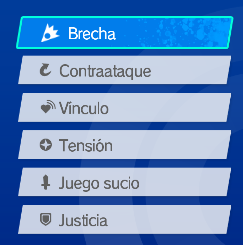
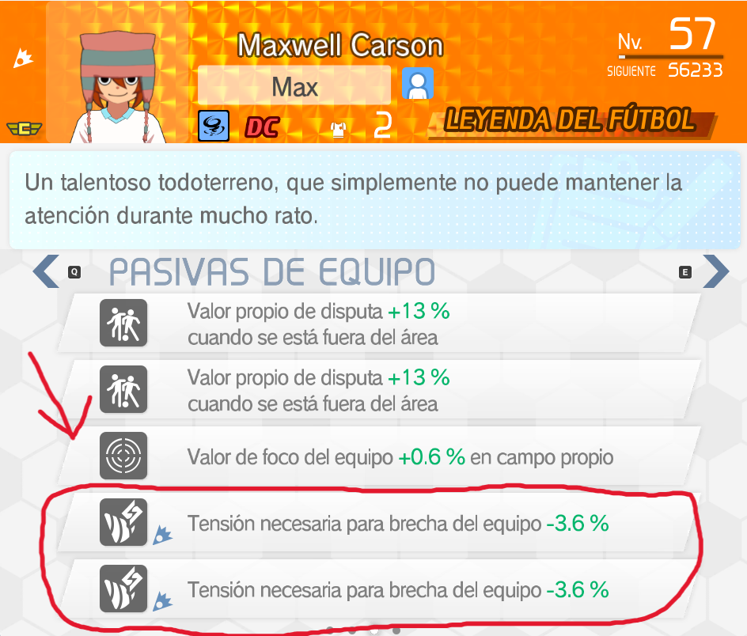
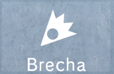
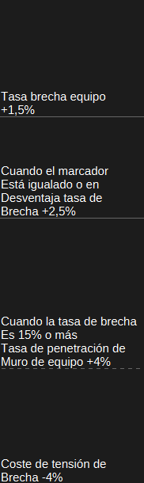
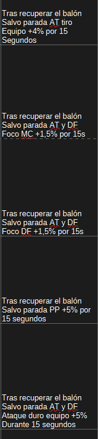
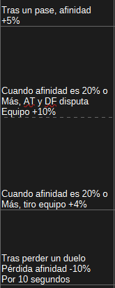
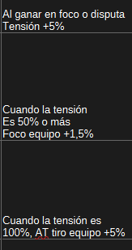
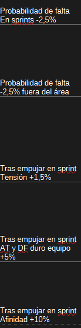
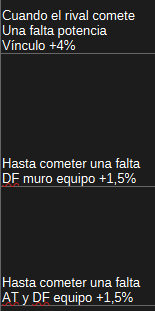

ARQUETIPOS
A la hora de crear un equipo, debes elegir uno o varios arquetipos para definir tu estilo de juego.
-1 Conceptos generales
Cuando obtienes a un jugador, este puede pertenecer a 6 posibles arquetipos:
-1 Brecha
-2
Contraataque
-3 Vínculo
-4 Tensión
-5 Juego sucio
-6 Justicia

Cada arquetipo destaca por mejorar ciertas características y tener su propio estilo de juego y ventajas. Por lo general querrás tener un arquetipo claro sobre el cual construir tu equipo para poder obtener los máximos beneficios de ello, pero considero que hay cierta flexibilidad en algunos casos, cosa que desarrollaré en el futuro. Cada jugador contará con 2 pasivas de arquetipo, mientras los entrenadores y gerentes pueden contar hasta con 5 gracias a la personalización de sus pasivas. Las pasivas de arquetipo tienen un límite de estadística lo que limita algunos aspectos de ciertos equipos.
Jugador

Gerente

-2 Brecha

El arquetipo de brecha es un arquetipo completamente basado en la ofensiva. Este se basa enteramente en tirar a puerta y conseguir una brecha para reventarla de una.
Si nos fijamos en las pasivas de entrenador de este arquetipo podemos ver como estas pasivas buscan reforzar la posibilidad de brecha para rebasar al oponente, la capacidad de penetrar los muros para impactar y la retención de tensión para tener consistencia con el daño.(excel completo en el apartado pasivas) Todo el punto del arquetipo es conseguir tirar a puerta para tirar el dado de causar una brecha.

Con el arquetipo de brecha lo que querrás hacer es conseguir algo de tensión y dedicarte a disparar a la portería hasta que se de la probabilidad de brecha, pero teniendo sumo cuidado porque otros aspectos del equipo estarán descuidados y la necesidad de tensión puede afectar mucho a tu juego frente a jugadores que no dependan de ello.
-3 Contraataque
El arquetipo de Contraataque es un arquetipo que parece general, pero por sus características termina siendo muy ofensivo en la mayoría de casos.
Si nos fijamos en las pasivas de entrenador vemos el por qué de esto, si bien tiene mejoras generales, estas
se limitan a contadas posiciones
y están presentes por tiempo limitado tras obtener tú el balón, lo que hace que en algunos casos sea poco
práctico de forma general.

Con el arquetipo de contraataque lo que queremos es recuperar el balón sin parada por parte del portero para obtener mejoras temporales por 15 segundos. Si bien las pasivas permiten que los MC y DF puedan tener mejoras en el foco y hasta el portero reciba vida extra, no tiene tanto uso al ser un buff temporal de 15 segundos, su mayor uso termina siendo la mejora de tiro de hasta 100% por ese tiempo. En la mayoría de casos cuando el rival recupere el balón las mejoras de foco y portero no estarán presentes en lo que el rival llega a puerta , igual consigues tener algún foco con ventaja o recibir un tiro con la mejora de parada, pero no es consistente, mientras que las mejoras de tiro por lo general siempre les podrás sacar partido, incluso si tienes que robar el balón con una segada y tirar sin técnica, sigue siendo muy rentable y fuerte.
-4 Vínculo
El arquetipo de vínculo es otro arquetipo centrado en la ofensiva.
Si nos fijamos en las pasivas de entrenador nos damos cuenta de que todo el arquetipo juega alrededor de subir la afinidad y destrozar la portería enemiga, facilitando aumentar la afinidad como mantenerla tras perder el balón.

Este arquetipo es otro arquetipo muy ofensivo, pues todo el punto de la afinidad es aumentar la potencia con la que tiras a puerta. Este es un caso como el de brecha donde queremos tener la oportunidad de subir rápido la afinidad y pegar un tiro fuerte, pero descuida otros aspectos del equipo lo que puede ser un problema.
-5 Tensión
El arquetipo de tensión es un arquetipo que consigue destacar en casi todos los aspectos. Este arquetipo otorga mucha facilidad para jugar a la vez que puede tener mucha potencia a nivel ofensivo cuando sea necesario haciendo que sea considerado por mucha gente el mejor arquetipo del juego.
Si nos fijamos en las pasivas de entrenador entendemos el por qué de esto. Tiene mejoras de foco generales, la capacidad de destrozar la portería y más facilidad por el aumento de ganancia de tensión.

Este arquetipo se centra en ganar mucha tensión para poder obtener las mejoras con las cuales tener ventaja en los focos , teniendo siempre la posibilidad de llevar la tensión al 100% y poder hacer un tiro con una mejora de hasta 200%. Una vez el equipo supera el 50% de tensión se vuelve como una bola de nieve y es complicado pararlo sin tener tanta dificultad en su juego, pues con solo ganar un foco al inicio del partido ya superas el 50% y tirando en el 100% nunca bajas de ese 50 si sabes administrarte.
-6 Juego sucio

El equipo de faltas es un arquetipo que se centra en permitirte jugar de forma más libre sin tanto riesgo de falta. No es un arquetipo que destaque por sacar números destacables ni nada, simplemente le resta riesgo a usar las faltas permitiendo un estilo de juego muy distinto.
Si nos fijamos en las pasivas de entrenador nos damos cuenta de como el equipo apenas otorga mejoras, solo permite hacer faltas con mayor libertad.

Por lo general este equipo no destaca en nada, simplemente es una forma más sencilla y llevadera de jugar al perder riesgos y tener esa ventaja sobre el rival, pero el sacrificio estadístico es mucho.
-7 Justicia
El arquetipo de justicia es otro arquetipo considerado de los mejores. Este arquetipo es muy general otorgando mejoras generales con una restricción, no hacer faltas. Compensa esta pérdida con todas las mejoras siendo estas volátiles, pues una sola falta te las remueve.
Si nos fijamos en las pasivas de entrenador vemos las pocas pero siempre presentes mejoras de este equipo, que se aplican a todo.

Este equipo es bastante recomendable siempre que sepas jugar sin faltas, no te pide nada especial más allá de eso para poder funcionar de manera óptima, pero sí es cierto que Contraataque y Tensión pueden ofrecer mucho más con ciertas libertades si sabes jugar.
-8 Equipos híbridos
Esto prefiero apartarlo y explicarlo por su cuenta porque es algo muy general. Como hemos visto, cada arquetipo destaca en ciertas cosas. Unos ofrecen mejoras generales, otros concretas al foco, potencia de tiro y esas cosas. Gracias a la capacidad de personalización, es posible optimizar estadísticas en concreto lo que hace viable una estrategia, hacer equipos híbridos. Voy a poner de ejemplo el equipo que utilizo ahora. Yo juego con un híbrido de contraataque y tensión. Del arquetipo de contraataque he subido solo una estadística usando algunos jugadores y los entrenadores/gerentes, el tiro. Una vez he conseguido el tiro al 100%, todas las pasivas restantes las he dedicado a aumentar la potencia de foco y la ganancia de tensión. Gracias a este híbrido, cuento con la capacidad ofensiva del arquetipo de contraataque con la cual puedo reventar la portería sin mucha dificultad de forma consistente, mientras puedo conseguir mucha tensión y puedo pelear los focos. Esto mismo que yo he hecho se puede aplicar a muchas cosas, igual alguien puede hacer un híbrido entre justicia y tensión, usando tensión para romper la portería con tiros largos muy potentes y justicia para tener esos buffs generales. En este juego hay muchas posibilidades de combinaciones, igual nos sorprendemos y arquetipos que parecían débiles terminan siendo muy poderosos como híbridos.
El punto es clave, ten libertad para experimentar, no tienes por qué ceñirte solo a un estilo de juego y esto puede resultar ser muy muy beneficioso.